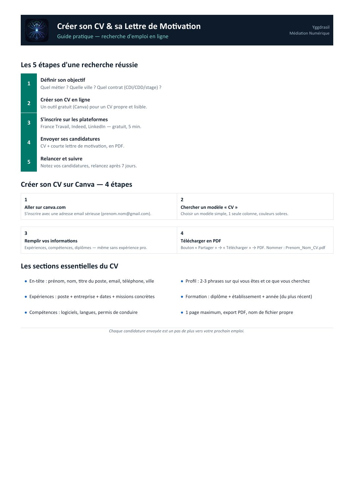
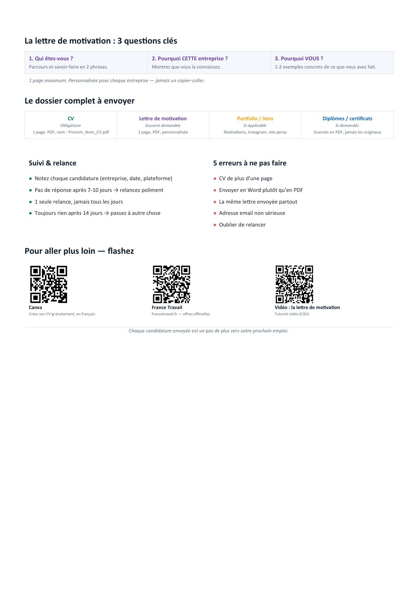

⏳ Vérification de votre niveau…


📄 Texte de la page (traduisible — les images ci-dessus restent en français)
Créer son CV & sa Lettre de Motivation Yggdrasil Médiation Numérique Guide pratique — recherche d'emploi en ligne
Les 5 étapes d'une recherche réussie Définir son objectif 1 Quel métier ? Quelle ville ? Quel contrat (CDI/CDD/stage) ?
Créer son CV en ligne 2 Un outil gratuit (Canva) pour un CV propre et lisible.
S'inscrire sur les plateformes 3 France Travail, Indeed, LinkedIn — gratuit, 5 min.
Envoyer ses candidatures 4 CV + courte lettre de motivation, en PDF.
Relancer et suivre 5 Notez vos candidatures, relancez après 7 jours.
Créer son CV sur Canva — 4 étapes 1 2 Aller sur canva.com Chercher un modèle « CV » S'inscrire avec une adresse email sérieuse (prenom.nom@gmail.com). Choisir un modèle simple, 1 seule colonne, couleurs sobres.
3 4 Remplir vos informations Télécharger en PDF Expériences, compétences, diplômes — même sans expérience pro. Bouton « Partager » → « Télécharger » → PDF. Nommer : Prenom_Nom_CV.pdf
Les sections essentielles du CV ● En-tête : prénom, nom, titre du poste, email, téléphone, ville ● Profil : 2-3 phrases sur qui vous êtes et ce que vous cherchez
● Expériences : poste + entreprise + dates + missions concrètes ● Formation : diplôme + établissement + année (du plus récent)
● Compétences : logiciels, langues, permis de conduire ● 1 page maximum, export PDF, nom de fichier propre
Chaque candidature envoyée est un pas de plus vers votre prochain emploi.
La lettre de motivation : 3 questions clés 1. Qui êtes-vous ? 2. Pourquoi CETTE entreprise ? 3. Pourquoi VOUS ? Parcours et savoir-faire en 2 phrases. Montrez que vous la connaissez. 1-2 exemples concrets de ce que vous avez fait.
1 page maximum. Personnalisée pour chaque entreprise — jamais un copier-coller.
Le dossier complet à envoyer CV Lettre de motivation Portfolio / liens Diplômes / certificats Obligatoire Souvent demandée Si applicable Si demandés 1 page, PDF, nom : Prenom_Nom_CV.pdf 1 page, PDF, personnalisée Réalisations, Instagram, site perso Scannés en PDF, jamais les originaux
Suivi & relance 5 erreurs à ne pas faire ● Notez chaque candidature (entreprise, date, plateforme) ● CV de plus d'une page
● Pas de réponse après 7-10 jours → relancez poliment ● Envoyer en Word plutôt qu'en PDF
● 1 seule relance, jamais tous les jours ● La même lettre envoyée partout
● Toujours rien après 14 jours → passez à autre chose ● Adresse email non sérieuse
● Oublier de relancer
Pour aller plus loin — flashez
Canva France Travail Vidéo : la lettre de motivation Créer son CV gratuitement, en français francetravail.fr — offres officielles Tutoriel vidéo (CIDJ)
Chaque candidature envoyée est un pas de plus vers votre prochain emploi.